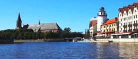

Видео
Народное творчество
Народное творчество

Кенигсбергский университет и собор на острове Кнайпхоф, конец XIX в. Старейший университет Пруссии (Альбертина) построен в 1544 г. рядом с кафедральным собором. Они составляют архитектурный ансамбль острова Кнайпхоф. Здесь учился Э.Т.А. Гофман и преподавал И. Кант.
Кенигсбергский университет и собор на острове Кнайпхоф, конец XIX в. Старейший университет Пруссии (Альбертина) построен в 1544 г. рядом с кафедральным собором. Они составляют архитектурный ансамбль острова Кнайпхоф. Здесь учился Э.Т.А. Гофман и преподавал И. Кант.
Кенигсбергский университет и собор на острове Кнайпхоф, конец XIX в. Старейший университет Пруссии (Альбертина) построен в 1544 г. рядом с кафедральным собором. Они составляют архитектурный ансамбль острова Кнайпхоф. Здесь учился Э.Т.А. Гофман и преподавал И. Кант.
Вебсайт: http://sobor-kaliningrad.ru
Email: ksobor@baltnet.ru
Телефон: +7 (4012) 94-45-83
Без выходных
Римский историк Тацит в 60-х годах до н. э. упоминает о племенах пруссов, живших между устьями рек Висла и Неман. В XII веке, очень далеко от прусских земель, в Иерусалиме, римский папа Иннокентий III утвердил Орден дома Святой Марии Тевтонской, который в русской истории известен как Тевтонский орден. Указ папы «Золотая булла» даровал ордену власть над захваченными землями, и рыцари начали вытеснять пруссов с их земель. В 1255 году магистр Тевтонского ордена Пеппо Остерн фон Вертгайнт и богемский король Пржемысл II Отакар основывают деревянную крепость Кёнигсберг у реки Прегель, вокруг которой быстро вырос город Альштадт, затем соседний Лебенихт и, наконец, Кнайпхоф на речном острове. Три города конкурировали и даже воевали друг с другом, пока в 1724 году не объединились в один, названный именем древней тевтонской крепости, ― Кёнигсберг.
Первый собор в Альштадте показался местному епископу недостаточно большим для растущего города, и под Кафедральный собор выделили новый участок в северо-восточном углу острова Кнайпхоф. 13 сентября 1333 года считается днем основания Кёнигсбергского собора, посвященного Деве Марии и святому Адальберту.
Комментарии: 15

Из заграничного круиза старший экономист "Гипрорыбы"
Семен Семеныч Горбунков (Никулин) возвращается в гипсе с ошибочно
Из заграничного круиза старший экономист "Гипрорыбы" Семен Семеныч Горбунков (Никулин) возвращается в гипсе с ошибочно замурованными в нем драгоценностями.
Из заграничного круиза старший экономист "Гипрорыбы" Семен Семеныч Горбунков (Никулин) возвращается в гипсе с ошибочно замурованными в нем драгоценностями.